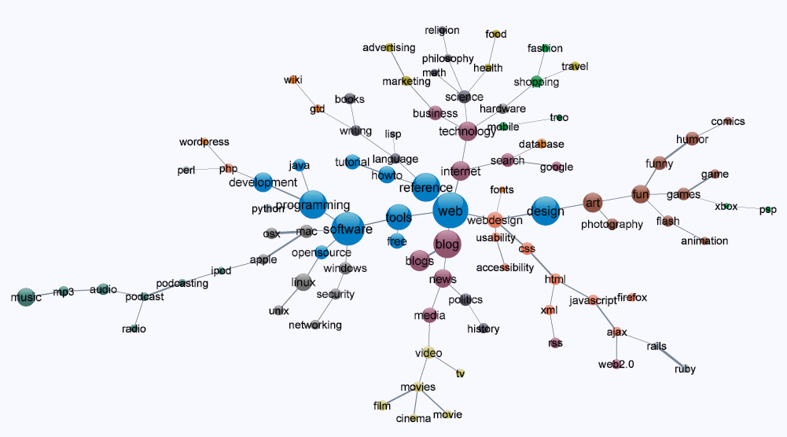
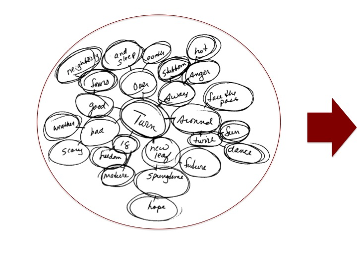
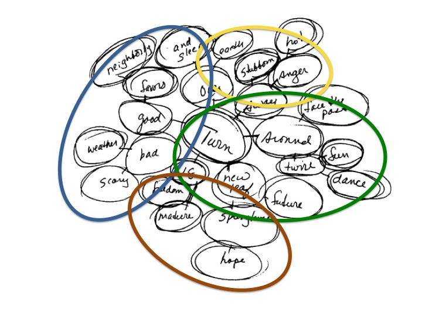
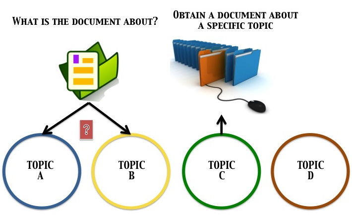
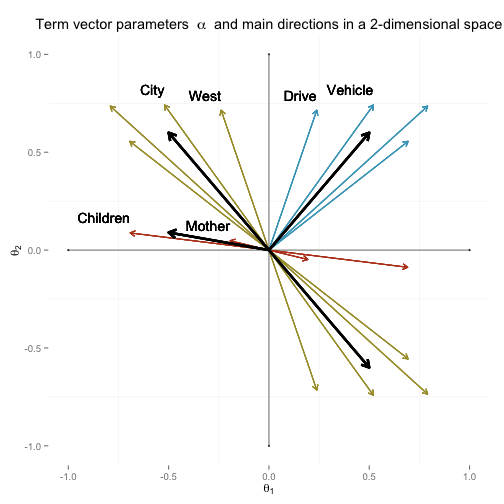
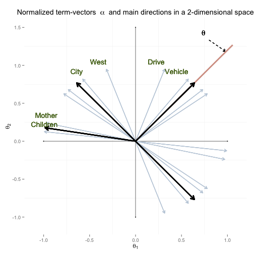
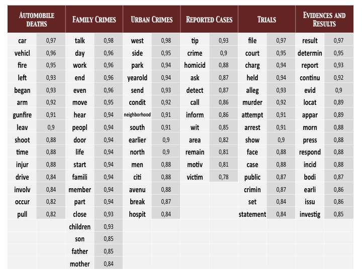
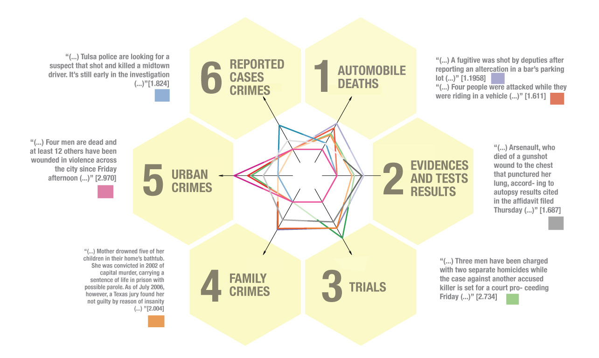

Valeria Fonseca Díaz / Álvaro Mauricio Montenegro Díaz Bogotá, Colombia
What is this about?

Where is the analysis of the baseline documents?
Can we identify potential general topics and support our analysis from the baseline documents?
Overall sketch



Text Corpus Data
In order to present our method, we have chosen the following corpus
800 News articles about deaths in the USA Unit of analysis: Body of the article
Introduction
Here we will present the use of a latent linear model to perform textual analysis. The main purpose is to discover what topics occur in a collection of documents
The method involves a bayesian estimation of a multivariate latent linear model over a document-term matrix
Topics will be calculated as vectors by grouping terms according to their estimated parameters
Each of the documents will be associated to topics according to how correlated its estimated parameters and each topic vector are
Language Processing Technique
Document-Term Matrix
Articles were brought to R via library(XML)
R Package tm provides a complete language processing techique which produces a document-term matrix
Westminster police spokeswoman Cheri Spottke says officers were called
to a Savannah Suites hotel at about 7 p.m. Friday on reports of shots fired
and found two people with gunshot wounds (...).
This binary matrix will be refered to as Y = ( Yij )N × K ,
N documents ,
K terms
Gibbs Sampler: Given the joint posterior distribution, sample from each conditional one at a time
We have derived this procedure in detail for this particular model in conjunction with our R algorithm. (Montenegro, 2010), (Fox, 2010)
Interpretation of M2PNO Model
Calculating topic vectors
Grouping terms

It can be shown that \(\frac{\boldsymbol{\alpha}_j}{||\boldsymbol{\alpha}_j||}\) are directions in which \(\boldsymbol{\theta}_i\) values are best discriminated (Reckase, 2009)
When placing \(\boldsymbol{\alpha}_j\) vectors in a \(\boldsymbol{d}\)-dimensional space, such directions seem to be grouping around few main directions
These vectors are to be clustered via a hierarchical method taking correlation as the disimilarity measure
Therefore, what we are doing is to cluster words to define some topics
Topic vectors
A total of \(\boldsymbol{m}\) topics have been detected
From each of the terms clusters, first eigenvector \(\mathbf{t}_m\) will be the corresponding topic vector
Projection score for documents \[\boldsymbol{\theta'}_i \mathbf{t}_m\]
Projection score for words \[\boldsymbol{\alpha'}_j \mathbf{t}_m\]

Gun Deaths Corpus Data
- Results -
Gun Deaths Topics

Gun Deaths News Articles: Examples

Conclusions and future work
Probit latent model is a good alternative based on the type of input matrix
This method can be conceived as a dimension reduction technique with the particularity that each unit is to be explained by all of the thematic dimensions, that is, all of the topics
Most analyses are based on terms clustering methods to identify what we have called tendencies of textual data,
but the analysis over baseline documents is not actually performed. In many fields of study, diferent evaluations of
speech are needed so that the estimated score of each unit is a first approach to judge textual data
As a future work, one of the aspects that can be optimized is to set a rule to choose the number of dimensions to estimate the M2PNO or, possibly, another method to detect such a number a priori
Bibliography
James H. Albert. Bayesian estimation of normal ogive item response curves using gibbs sampling. Journal of Educational Statistics, 17(3):20, 1992